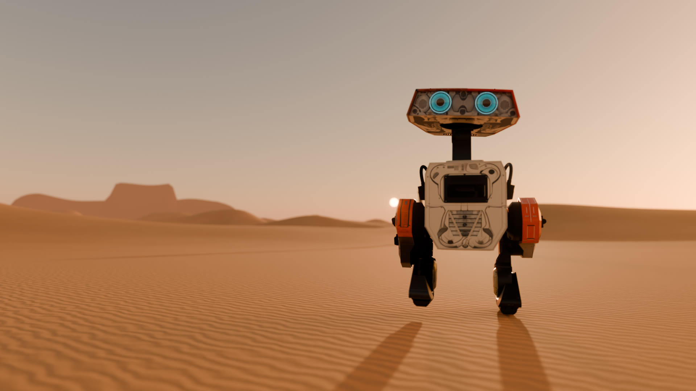
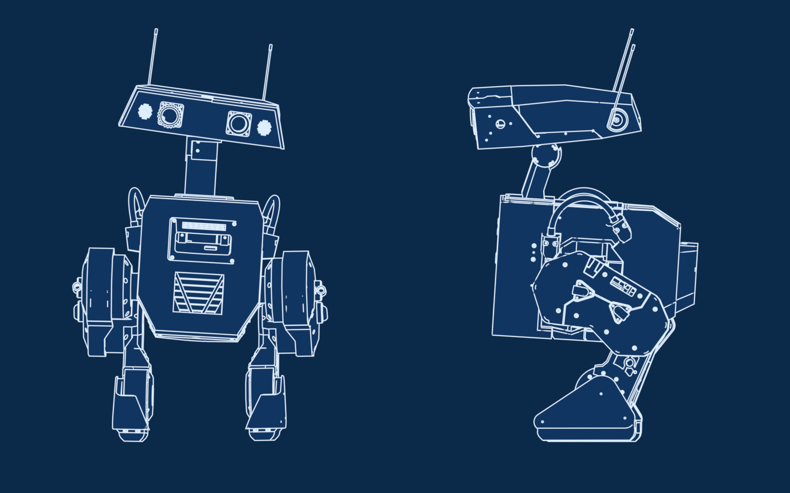
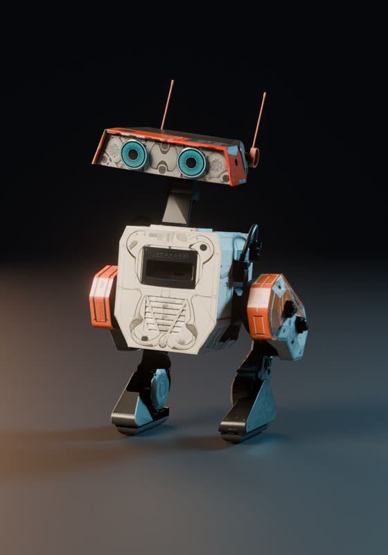
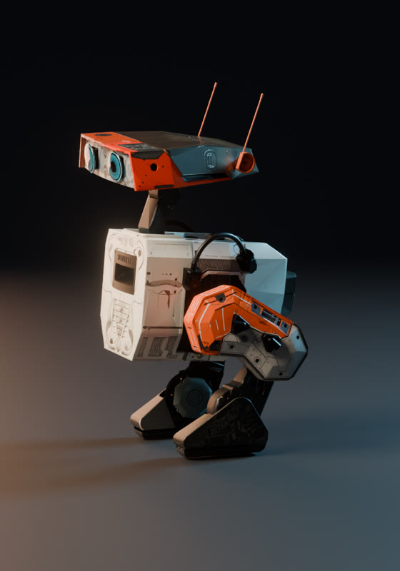
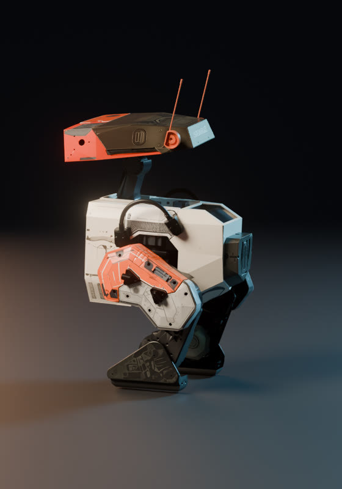
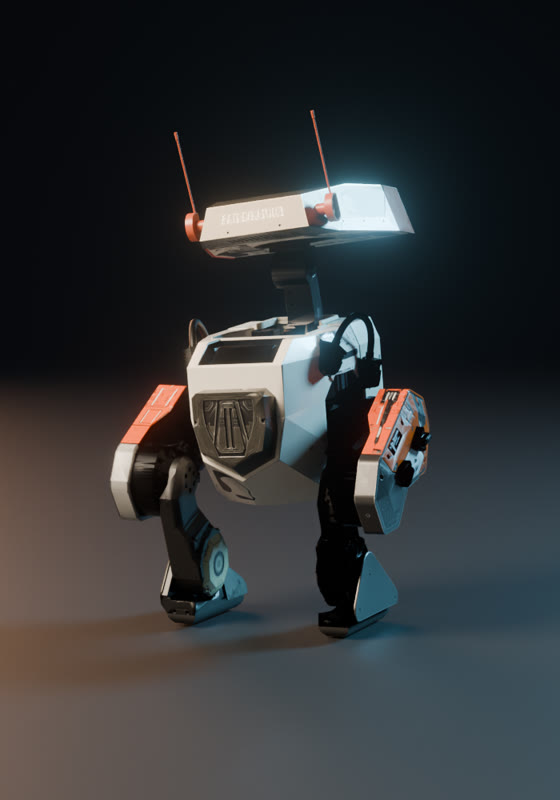

<meta charset="utf-8">
<title>BDX: A New Gait</title>
<meta name="claude:viewport-fit-sides" content="cover">
<link rel="preconnect" href="https://fonts.googleapis.com">
<link rel="preconnect" href="https://fonts.gstatic.com" crossorigin>
<link rel="stylesheet" href="https://fonts.googleapis.com/css2?family=News+Cycle:wght@400;700&family=Saira+Extra+Condensed:wght@500;700;800&family=IBM+Plex+Mono:wght@400;500&family=Noto+Sans+SC:wght@400;500;700;900&display=swap">
<style>
/* Layout: a holo-archive dossier. Full-bleed key art, then a single 1180px column of
   "readouts" on deep space; one gold accent for titles, teal for droid light. */
:root {
  --void: #06080D;          /* deep space */
  --panel: #0D121B;         /* readout panel */
  --line: #1E2735;          /* hairlines, grid */
  --ink: #ECE5D4;           /* ivory: the droid's shell */
  --ink-2: #A8A293;         /* secondary text */
  --ink-3: #6F6A60;         /* muted labels */
  --gold: #FFD84A;          /* titling gold (text only) */
  --ember: #C9532A;         /* livery accent */
  --teal: #53E3E0;          /* eye light */
  --bp: #0B2A4A;            /* blueprint blue */
  --mark-ours: #B88818;     /* chart: ours (validated, dark surface) */
  --mark-paper: #6E8BD6;    /* chart: paper */
  --mark-stand: #239E9B;    /* chart: standing */
  --f-display: "Saira Extra Condensed", "DIN Condensed", "Arial Narrow", sans-serif;
  --f-body: "News Cycle", "News Gothic MT", "Franklin Gothic Book", "Helvetica Neue", Arial, sans-serif;
  --f-mono: "IBM Plex Mono", ui-monospace, "SF Mono", Menlo, monospace;
  --col: 1180px;
  color-scheme: dark;
}
* { box-sizing: border-box; }
body {
  background: var(--void); color: var(--ink);
  font: 400 18px/1.6 var(--f-body);
  -webkit-font-smoothing: antialiased;
}
#stars { position: fixed; inset: 0; width: 100%; height: 100%; z-index: 0; pointer-events: none; }
main { position: relative; z-index: 1; }
.wrap { max-width: var(--col); margin: 0 auto; padding-left: max(16px, env(safe-area-inset-left, 0px)); padding-right: max(16px, env(safe-area-inset-right, 0px)); }
h1, h2, h3 { font-family: var(--f-display); font-weight: 700; letter-spacing: .02em; text-wrap: balance; margin: 0; line-height: 1; }
h2 { font-size: clamp(40px, 6vw, 72px); text-transform: uppercase; }
h3 { font-size: 28px; text-transform: uppercase; letter-spacing: .04em; }
p { margin: 0; max-width: 66ch; }
a { color: var(--teal); }
:focus-visible { outline: 2px solid var(--teal); outline-offset: 3px; }
.eyebrow { font: 500 12px/1.2 var(--f-mono); letter-spacing: .22em; text-transform: uppercase; color: var(--gold); }
.mono { font-family: var(--f-mono); font-variant-numeric: tabular-nums; }
section { padding-block: clamp(64px, 9vw, 120px); }
.sec-head { display: grid; gap: 16px; margin-bottom: 40px; }
.sec-head p { color: var(--ink-2); }

/* ---------------- hero */
.hero { position: relative; isolation: isolate; overflow: hidden; background: #1a120c; }
.hero img { display: block; width: 100%; height: auto; aspect-ratio: 16 / 9; object-fit: cover; min-height: 560px; }
.hero::after { content: ""; position: absolute; inset: 0; background:
  linear-gradient(90deg, rgba(6,8,13,.86) 0%, rgba(6,8,13,.55) 38%, rgba(6,8,13,0) 62%),
  linear-gradient(0deg, var(--void) 0%, rgba(6,8,13,0) 26%); z-index: 1; }
.hero-copy { position: absolute; inset: 0; z-index: 2; display: flex; align-items: center; }
.hero-copy .wrap { width: 100%; display: grid; gap: 22px; }
.title-bdx { font-family: var(--f-display); font-weight: 800; font-size: clamp(120px, 21vw, 300px); line-height: .78;
  color: transparent; -webkit-text-stroke: 3px var(--gold); letter-spacing: .02em; }
.subtitle { font-family: var(--f-display); font-weight: 700; font-size: clamp(26px, 3.4vw, 44px); letter-spacing: .14em; text-transform: uppercase; }
.subtitle span { color: var(--gold); }
.hero .lede { color: var(--ink); max-width: 46ch; font-size: clamp(17px, 1.5vw, 20px); text-shadow: 0 1px 12px rgba(0,0,0,.6); }
.hero-stats { display: flex; flex-wrap: wrap; gap: 28px; margin-top: 6px; }
.stat b { display: block; font: 700 clamp(28px, 3vw, 40px)/1 var(--f-display); color: var(--ink); letter-spacing: .02em; }
.stat span { font: 500 11px/1.4 var(--f-mono); letter-spacing: .14em; text-transform: uppercase; color: var(--ink-2); }
.btn { display: inline-flex; align-items: center; gap: 10px; width: max-content; padding: 12px 20px; border: 1px solid var(--gold); color: var(--gold);
  font: 500 13px/1 var(--f-mono); letter-spacing: .18em; text-transform: uppercase; text-decoration: none; background: rgba(6,8,13,.35); }
.btn:hover { background: var(--gold); color: var(--void); }
.btn svg { width: 12px; height: 12px; fill: currentColor; }

/* ---------------- film */
.film { display: grid; gap: 18px; }
.film video { width: 100%; max-width: 100%; aspect-ratio: 16 / 9; background: #000; display: block; border: 1px solid var(--line); }
.film-meta { display: flex; flex-wrap: wrap; justify-content: space-between; gap: 12px; color: var(--ink-3); font: 400 12px/1.5 var(--f-mono); letter-spacing: .08em; text-transform: uppercase; }

/* ---------------- crawl */
.crawl-stage { perspective: 420px; perspective-origin: 50% 0%; height: 520px; overflow: hidden; position: relative;
  -webkit-mask-image: linear-gradient(to top, #000 55%, transparent 100%); mask-image: linear-gradient(to top, #000 55%, transparent 100%); }
.crawl { transform-origin: 50% 100%; transform: rotateX(24deg); position: absolute; left: 50%; bottom: 0; width: min(760px, 100%); translate: -50% 0;
  color: var(--gold); font: 700 clamp(18px, 2.2vw, 27px)/1.45 var(--f-body); text-align: justify; hyphens: auto; display: grid; gap: 1.1em; }
.crawl .ep { text-align: center; font-family: var(--f-display); letter-spacing: .12em; }
.crawl .ep small { display: block; font-size: .7em; }
.crawl .ep strong { display: block; font-size: 2.1em; line-height: 1; }
.crawl p { max-width: none; }

/* ---------------- readout (blueprint) */
.readout { display: grid; grid-template-columns: minmax(0, 1.55fr) minmax(0, 1fr); gap: 32px; align-items: start; }
.bp { position: relative; background: var(--bp); border: 1px solid #1b4470; }
.bp img { display: block; width: 100%; height: auto; }
.bp svg { position: absolute; inset: 0; width: 100%; height: 100%; }
.bp text { font: 500 19px var(--f-mono); fill: #DDEEFF; letter-spacing: .04em; }
.bp .tag { fill: var(--gold); font-size: 16px; }
.bp line, .bp polyline { stroke: var(--gold); stroke-width: 1.6; fill: none; }
.bp circle { fill: var(--gold); }
.bp-grid { position: absolute; inset: 0; background-image: linear-gradient(rgba(221,238,255,.06) 1px, transparent 1px), linear-gradient(90deg, rgba(221,238,255,.06) 1px, transparent 1px); background-size: 40px 40px; pointer-events: none; }
.specs { display: grid; gap: 0; border-top: 1px solid var(--line); }
.specs div { display: grid; grid-template-columns: 1fr auto; gap: 16px; padding: 12px 0; border-bottom: 1px solid var(--line); }
.specs dt { color: var(--ink-2); margin: 0; }
.specs dd { margin: 0; font-family: var(--f-mono); font-variant-numeric: tabular-nums; text-align: right; }
.motor { display: grid; gap: 4px; padding: 14px 0; border-bottom: 1px solid var(--line); }
.motor b { font: 700 20px/1.1 var(--f-display); letter-spacing: .06em; text-transform: uppercase; }
.motor span { color: var(--ink-2); font-size: 15px; }

/* ---------------- livery */
.livery { display: grid; grid-template-columns: repeat(4, minmax(0, 1fr)); gap: 2px; background: var(--line); border: 1px solid var(--line); }
.livery figure { margin: 0; background: #0B0D11; position: relative; }
.livery img { display: block; width: 100%; height: auto; }
.livery figcaption { position: absolute; left: 12px; bottom: 10px; font: 500 11px var(--f-mono); letter-spacing: .16em; color: var(--ink-3); text-transform: uppercase; }
.swatches { display: grid; grid-template-columns: repeat(5, minmax(0, 1fr)); gap: 16px; margin-top: 28px; }
.sw { display: grid; gap: 8px; }
.sw i { display: block; height: 56px; border: 1px solid rgba(255,255,255,.08); }
.sw b { font: 700 18px/1 var(--f-display); letter-spacing: .08em; text-transform: uppercase; }
.sw span { font: 400 12px/1.4 var(--f-mono); color: var(--ink-2); }
.note { margin-top: 28px; color: var(--ink-2); font-size: 16px; max-width: 80ch; }

/* ---------------- charts */
.board { display: grid; grid-template-columns: minmax(0, 1.25fr) minmax(0, 1fr); gap: 24px; }
.card { background: var(--panel); border: 1px solid var(--line); padding: 22px 22px 18px; display: grid; gap: 14px; min-width: 0; }
.card h3 { font-size: 24px; }
.card .sub { color: var(--ink-2); font-size: 15px; }
.legend { display: flex; flex-wrap: wrap; gap: 18px; font: 400 12px var(--f-mono); color: var(--ink-2); letter-spacing: .06em; }
.legend i { display: inline-block; width: 10px; height: 10px; border-radius: 50%; margin-right: 7px; vertical-align: -1px; }
.chart { position: relative; }
.chart svg { display: block; width: 100%; height: auto; overflow: visible; }
.chart text { font: 400 12px var(--f-mono); fill: var(--ink-2); }
.chart .lbl { fill: var(--ink); font-family: var(--f-body); font-size: 14px; }
.chart .val { fill: var(--ink); font-size: 12px; }
.chart .grid { stroke: var(--line); stroke-width: 1; }
.chart .axis { stroke: #33405A; }
.tip { position: absolute; pointer-events: none; background: #151C29; border: 1px solid #2A3650; padding: 8px 10px; font: 400 12px/1.5 var(--f-mono); color: var(--ink); white-space: nowrap; transform: translate(-50%, calc(-100% - 12px)); z-index: 3; }
.tip b { color: var(--gold); font-weight: 500; }
table { width: 100%; border-collapse: collapse; font-variant-numeric: tabular-nums; }
th, td { text-align: right; padding: 10px 12px; border-bottom: 1px solid var(--line); white-space: nowrap; }
th:first-child, td:first-child { text-align: left; }
th { font: 500 11px/1.3 var(--f-mono); letter-spacing: .12em; text-transform: uppercase; color: var(--ink-3); }
td { font-family: var(--f-mono); font-size: 14px; }
td:first-child { font-family: var(--f-body); font-size: 16px; }
tr.ours td { color: var(--ink); }
tr.dim td { color: var(--ink-2); }
.scroll { overflow-x: auto; }
.pill { display: inline-block; padding: 2px 8px; font: 500 11px var(--f-mono); letter-spacing: .1em; text-transform: uppercase; border: 1px solid currentColor; }
.pill.ok { color: var(--teal); }
.pill.no { color: #E07A5F; }

/* ---------------- shots */
.shots { display: grid; grid-template-columns: repeat(3, minmax(0, 1fr)); gap: 28px 20px; align-items: start; }
.shot { margin: 0; display: grid; gap: 10px; }
.shot video { width: 100%; max-width: 100%; aspect-ratio: 16 / 9; object-fit: cover; display: block; background: #000; border: 1px solid var(--line); }
.shot figcaption { display: grid; gap: 2px; }
.shot b { font: 700 20px/1.1 var(--f-display); letter-spacing: .08em; text-transform: uppercase; }
.shot span { color: var(--ink); font-size: 16px; font-style: italic; }
.shot .fact { font: 400 12px/1.4 var(--f-mono); color: var(--teal); font-style: normal; letter-spacing: .02em; opacity: .85; }
.shot.wide { grid-column: span 2; }

/* ---------------- incidents */
.log { display: grid; grid-template-columns: repeat(2, minmax(0, 1fr)); gap: 0 40px; }
.inc { display: grid; grid-template-columns: 64px minmax(0, 1fr); gap: 16px; padding: 22px 0; border-top: 1px solid var(--line); }
.inc .code { font: 500 12px/1.6 var(--f-mono); color: var(--ember); letter-spacing: .1em; }
.inc b { display: block; font: 700 21px/1.15 var(--f-display); letter-spacing: .05em; text-transform: uppercase; margin-bottom: 6px; }
.inc p { color: var(--ink-2); font-size: 16px; }

footer { border-top: 1px solid var(--line); padding-block: 40px 56px; color: var(--ink-3); font-size: 14px; }
footer .wrap { display: grid; gap: 10px; }

@media (max-width: 900px) {
  .readout, .board { grid-template-columns: minmax(0, 1fr); }
  .shots { grid-template-columns: repeat(2, minmax(0, 1fr)); }
  .log { grid-template-columns: minmax(0, 1fr); }
  .livery { grid-template-columns: repeat(2, minmax(0, 1fr)); }
  .swatches { grid-template-columns: repeat(3, minmax(0, 1fr)); }
}
@media (max-width: 620px) {
  .hero img { min-height: 640px; object-position: 72% 50%; }
  .hero::after { background: linear-gradient(0deg, var(--void) 0%, rgba(6,8,13,.78) 45%, rgba(6,8,13,.25) 100%); }
  .hero-copy { align-items: flex-end; padding-bottom: 32px; }
  .shots { grid-template-columns: minmax(0, 1fr); }
  .shot.wide { grid-column: auto; }
  .crawl-stage { height: 600px; perspective: 300px; }
}
:root[lang="zh"] { --f-display: "Noto Sans SC", "PingFang SC", "Hiragino Sans GB", sans-serif; --f-body: "Noto Sans SC", "PingFang SC", "Hiragino Sans GB", sans-serif; }
:root[lang="zh"] h2, :root[lang="zh"] h3, :root[lang="zh"] .subtitle, :root[lang="zh"] .shot b, :root[lang="zh"] .inc b, :root[lang="zh"] .motor b, :root[lang="zh"] .sw b { letter-spacing: .04em; font-weight: 900; }
:root[lang="zh"] .shot span { font-style: normal; }
.lang { position: absolute; z-index: 3; top: calc(16px + env(safe-area-inset-top, 0px)); right: max(16px, env(safe-area-inset-right, 0px)); display: flex; border: 1px solid rgba(255,216,74,.6); background: rgba(6,8,13,.45); }
.lang button { font: 500 12px/1 var(--f-mono); letter-spacing: .14em; color: var(--ink); background: none; border: 0; padding: 9px 12px; cursor: pointer; }
.lang button[aria-pressed="true"] { background: var(--gold); color: var(--void); }
@media (prefers-reduced-motion: reduce) { * { animation: none !important; transition: none !important; } }
</style>

<canvas id="stars" aria-hidden="true"></canvas>
<main>
  <header class="hero">
    <div class="lang" role="group" aria-label="Language / 语言"><button type="button" id="lang-en" aria-pressed="true">EN</button><button type="button" id="lang-zh" aria-pressed="false">中文</button></div>
    
    <div class="hero-copy">
      <div class="wrap">
        <div class="eyebrow" data-zh="论文复现 · Grandia 等，RSS 2024">Reproduction · Grandia et al., RSS 2024</div>
        <h1 class="title-bdx" aria-label="BDX">BDX</h1>
        <div class="subtitle" data-zh="第 R 集 &lt;span&gt;/&lt;/span&gt; 新步态">Episode R <span>/</span> A New Gait</div>
        <p class="lede" data-zh="一个小机器人在成千上万个模拟世界里同时学会了走路。这一页记录它是怎样被教会的，每项结果与论文 &lt;em&gt;Design and Control of a Bipedal Robotic Character&lt;/em&gt; 相比如何，并用一部短片讲述那些最初的脚步通向了哪里。">A small droid learned to walk in thousands of simulated worlds at once. This page shows how it was taught, how each result compares with <em>Design and Control of a Bipedal Robotic Character</em>, and, in a short film, where those first steps lead.</p>
        <div class="hero-stats">
          <div class="stat"><b class="mono">0.017</b><span data-zh="rad 站立关节误差">rad standing MAE</span></div>
          <div class="stat"><b class="mono">1.8</b><span data-zh="rad/s 原地转向，与论文一致">rad/s turning, as in the paper</span></div>
          <div class="stat"><b class="mono">0</b><span data-zh="次摔倒 / 每个策略 15,360 秒">falls / 15,360 s each</span></div>
        </div>
        <a class="btn" href="#film"><svg viewBox="0 0 10 10" aria-hidden="true"><path d="M1 0l9 5-9 5z"/></svg><span data-zh="观看影片">Watch the film</span></a>
      </div>
    </div>
  </header>

  <section id="film">
    <div class="wrap film">
      <div class="sec-head">
        <div class="eyebrow" data-zh="影像传输 · 十章">Transmission · ten chapters</div>
        <h2 data-zh="影片">The film</h2>
        <p data-zh="一个小机器人在双日下醒来，循着远处的信号穿过沙丘。直到入夜也无人回应，直到某一刻，有了回应。两个机器人的每一个姿态，都来自训练好的策略在仿真中的运行；Blender 只添上光、镜头与漆面。每个脚印、每缕扬尘，都落在仿真里脚触地的位置；你听到的每一步，都是在沙漠里实地录下的真实脚步。">A small droid wakes under two suns and follows a distant signal across the dunes. By nightfall no one has answered, until someone does. Every pose of both droids comes from a trained policy running in simulation; Blender adds only light, lens and paint. Each footprint and each puff of dust sits where a simulated foot touched down, and each footstep you hear is a real step on desert sand, taken from a field recording.</p>
      </div>
      <video id="film-video" controls preload="metadata" playsinline poster="media/keyart_night.jpg" src="media/film_en.mp4" data-src-en="media/film_en.mp4" data-src-zh="media/film_zh.mp4"></video>
      <div class="film-meta"><span data-zh="1280 × 720 · 24 帧 · 立体声">1280 × 720 · 24 fps · stereo</span><span data-zh="Blender Cycles 路径追踪 · MuJoCo 运行记录 50 Hz">Blender Cycles on an RTX 4090 · MuJoCo rollouts at 50 Hz</span></div>
    </div>
  </section>

  <section aria-labelledby="crawl-h">
    <div class="wrap">
      <h2 id="crawl-h" class="eyebrow" style="font-size:12px" data-zh="序幕">Prologue</h2>
      <div class="crawl-stage">
        <div class="crawl">
          <div class="ep" data-zh="&lt;small&gt;第 R 集&lt;/small&gt;&lt;strong&gt;新 步 态&lt;/strong&gt;"><small>EPISODE R</small><strong>A NEW GAIT</strong></div>
          <p data-zh="在模拟器的寂静里，同一个小机器人的成千上万个分身同时跌倒、复位、再试一次。从这些失误中，提炼出唯一一个策略：一种走路的方式。">In the quiet of a simulator, thousands of copies of one small droid fall, reset and try again, all at the same time. From their mistakes a single policy is distilled: a way of walking.</p>
          <p data-zh="它的步态出自动画师之手。一条奖励让它贴近那份手稿，也让它在推搡、打滑与起伏的地面上站稳。">Its gait was drawn by animators. One reward keeps it close to their drawing, and on its feet through pushes, slips and uneven ground.</p>
          <p data-zh="如今，这个策略有了身体，也有了一片双日照耀的沙漠。沙丘之外，一座中继塔已经开始呼唤。">Now the policy is given a body, and a desert under two suns. Somewhere past the dunes, a relay has begun to call.</p>
        </div>
      </div>
    </div>
  </section>

  <section id="readout">
    <div class="wrap">
      <div class="sec-head">
        <div class="eyebrow" data-zh="技术图纸">Technical readout</div>
        <h2 data-zh="一位替身，十五公斤">A stand-in, fifteen kilograms</h2>
        <p data-zh="论文里的机器人并未公开，于是由开源的 BDX-R 代为出演，并按论文的质量分配重新配重：躯干 5.8 kg，每条腿 3.6 kg，头部 2.4 kg。每个关节都运行论文的执行器模型：编码器偏置、齿隙、摩擦，以及随转速升高而下降的力矩上限。">The paper's droid is private, so its stand-in is the open-source BDX-R, rebalanced to the paper's mass budget: 5.8 kg of torso, 3.6 kg in each leg, 2.4 kg of head. Every joint runs the paper's actuator model: encoder offset, backlash, friction, and a torque limit that falls as speed rises.</p>
      </div>
      <div class="readout">
        <div class="bp">
          
          <div class="bp-grid"></div>
          <svg viewBox="0 0 1600 1000" role="img" aria-label="Actuator callouts">
            <circle cx="1104" cy="314" r="6"/><polyline points="1104,314 1180,250 1300,250"/><text x="1190" y="238">HEAD P/Y/R</text><text class="tag" x="1190" y="275">DYNAMIXEL XH540 ×3</text>
            <circle cx="410" cy="330" r="6"/><polyline points="410,330 640,330 700,290"/><text x="660" y="278">NECK PITCH</text><text class="tag" x="660" y="315">UNITREE GO1</text>
            <circle cx="215" cy="600" r="6"/><polyline points="215,600 120,680 120,800"/><text x="40" y="830">HIP ROLL · PITCH</text><text class="tag" x="40" y="866">UNITREE A1 ×2/LEG</text>
            <circle cx="1180" cy="575" r="6"/><polyline points="1180,575 1440,575 1500,520"/><text x="1380" y="508">KNEE</text><text class="tag" x="1380" y="545">UNITREE A1</text>
            <circle cx="1272" cy="738" r="6"/><polyline points="1272,738 1420,800 1500,800"/><text x="1360" y="840">ANKLE · HIP YAW</text><text class="tag" x="1360" y="876">UNITREE GO1</text>
          </svg>
        </div>
        <div>
          <dl class="specs">
            <div><dt data-zh="身高（不含天线）">Height (without antennas)</dt><dd>0.66 m</dd></div>
            <div><dt data-zh="质量（躯干 / 腿 / 头）">Mass (torso / leg / head)</dt><dd>5.8 / 3.6 / 2.4 kg</dd></div>
            <div><dt data-zh="总质量">Total mass</dt><dd>15.4 kg</dd></div>
            <div><dt data-zh="驱动关节">Actuated joints</dt><dd data-zh="14（每腿 5 个，颈/头 4 个）">14 (5 per leg, 4 neck/head)</dd></div>
            <div><dt data-zh="策略频率">Policy rate</dt><dd>50 Hz</dd></div>
            <div><dt data-zh="指令通路">Setpoint path</dt><dd>FOH → 37.5 Hz LPF</dd></div>
            <div><dt data-zh="物理仿真">Physics</dt><dd>600 Hz, MuJoCo Warp</dd></div>
            <div><dt data-zh="网络">Network</dt><dd>3 × 512 ELU, PPO</dd></div>
            <div><dt data-zh="并行世界">Parallel worlds</dt><dd>8,192 × 24, 100,000 iterations</dd></div>
          </dl>
          <div class="motor"><b data-zh="腿部驱动">Leg drives</b><span data-zh="髋部横滚、髋部俯仰与膝关节用宇树 A1；髋部偏航与踝关节用宇树 Go1。">Unitree A1 on hip roll, hip pitch and knee. Unitree Go1 on hip yaw and ankle.</span></div>
          <div class="motor"><b data-zh="头部驱动">Head drives</b><span data-zh="颈部俯仰用 Go1，其上三个 Dynamixel XH540 的 PD 作用在指令误差的导数上（式 16）。">Go1 neck pitch, then three Dynamixel XH540s whose PD acts on the derivative of the setpoint error (Eq. 16).</span></div>
        </div>
      </div>
    </div>
  </section>

  <section id="livery">
    <div class="wrap">
      <div class="sec-head">
        <div class="eyebrow" data-zh="涂装车间">Paint shop</div>
        <h2 data-zh="侦察涂装">Scout livery</h2>
        <p data-zh="白色搪瓷、橙红装甲、暖灰饰边、深色机加工驱动件，取意于太空歌剧里的野外机器人。眼睛不是画上去的：每只都是一片玻璃透镜，下面是程序生成的光圈，远近皆清晰，还会眨眼。">White enamel, orange-red armour, warm-grey trim and dark machined drives, after the field droids of the space-opera tradition. The eyes are not paint at all: each is a glass lens over a procedural iris, sharp at any distance, that blinks.</p>
      </div>
      <div class="livery">
        <figure><figcaption data-zh="正面">Front</figcaption></figure>
        <figure><figcaption>¾</figcaption></figure>
        <figure><figcaption data-zh="侧面">Side</figcaption></figure>
        <figure><figcaption data-zh="背面">Rear</figcaption></figure>
      </div>
      <div class="swatches">
        <div class="sw"><i style="background:#ECE6D8"></i><b data-zh="搪瓷白">Enamel</b><span data-zh="#ECE6D8 · 面板、躯干、小腿">#ECE6D8 · face, torso, shins</span></div>
        <div class="sw"><i style="background:#D2502A"></i><b data-zh="信号橙">Signal orange</b><span data-zh="#D2502A · 大腿、头部两侧">#D2502A · thighs, head cheeks</span></div>
        <div class="sw"><i style="background:#7F817D"></i><b data-zh="暖灰">Warm grey</b><span data-zh="#7F817D · 脚、后脑">#7F817D · feet, rear head</span></div>
        <div class="sw"><i style="background:#2E3136"></i><b data-zh="枪灰">Gunmetal</b><span data-zh="#2E3136 · 驱动件、骨架">#2E3136 · drives, frame</span></div>
        <div class="sw"><i style="background:#5FFFF4"></i><b data-zh="虹膜">Iris</b><span data-zh="#5FFFF4 · 发光环">#5FFFF4 · emissive ring</span></div>
      </div>
      <p class="note" data-zh="Meshy 以 4K 和完整 PBR 贴图绘制了 36 个部件：20 块外壳，以及 16 个机加工件，其贴图再用于各自的镜像件。随后由 Cycles 把每个表面烘焙到未改动的仿真网格自己的 UV 上：漆面只改变它的样子，不改变它的运动。">Meshy painted 36 parts at 4K with full PBR maps: 20 shell panels and 16 machined parts, whose textures are reused for their mirrored twins. Cycles then baked each surface onto its own UV layout on the unchanged simulation mesh, so the paint changes how the droid looks and nothing about how it moves.</p>
    </div>
  </section>

  <section id="results">
    <div class="wrap">
      <div class="sec-head">
        <div class="eyebrow" data-zh="任务日志">Mission log</div>
        <h2 data-zh="结果">Results</h2>
        <p data-zh="每个策略按论文的训练量训练了 100,000 轮，再在 256 个并行世界里站立、行走或起舞 60 秒，并承受论文中的各种扰动推搡：每个策略共 15,360 仿真秒，没有一次摔倒。">Each policy was trained for the paper's full 100,000 iterations, then walked, stood or danced through 256 parallel worlds for 60 seconds, pushed and jostled by the paper's disturbances. That is 15,360 simulated seconds per policy. Not one of them fell.</p>
      </div>
      <div class="board">
        <div class="card">
          <h3 data-zh="关节跟踪误差">Joint tracking error</h3>
          <div class="sub" data-zh="表 III，平均绝对误差（rad），越低越好。">Table III, mean absolute error in rad. Lower is better.</div>
          <div class="legend"><span data-zh="&lt;i style=&quot;background:var(--mark-paper)&quot;&gt;&lt;/i&gt;论文"><i style="background:var(--mark-paper)"></i>Paper</span><span data-zh="&lt;i style=&quot;background:var(--mark-ours)&quot;&gt;&lt;/i&gt;本复现"><i style="background:var(--mark-ours)"></i>This reproduction</span></div>
          <div class="chart" id="mae"></div>
        </div>
        <div class="card">
          <h3 data-zh="抗推恢复">Push recovery</h3>
          <div class="sub" data-zh="对躯干施加随机方向的 0.1 秒推力，每档力 128 个世界。">0.1 s torso push in a random direction, 128 worlds per force.</div>
          <div class="legend"><span data-zh="&lt;i style=&quot;background:var(--mark-ours)&quot;&gt;&lt;/i&gt;行走 0.3 m/s"><i style="background:var(--mark-ours)"></i>Walking 0.3 m/s</span><span data-zh="&lt;i style=&quot;background:var(--mark-stand)&quot;&gt;&lt;/i&gt;站立"><i style="background:var(--mark-stand)"></i>Standing</span></div>
          <div class="chart" id="push"></div>
        </div>
        <div class="card">
          <h3 data-zh="速度跟踪">Velocity tracking</h3>
          <div class="sub" data-zh="对应图 7，在路径坐标系中测量。">Fig. 7 analogue, measured in the path frame.</div>
          <div class="scroll"><table>
            <thead><tr><th data-zh="指令">Command</th><th data-zh="目标">Target</th><th data-zh="实测">Measured</th></tr></thead>
            <tbody>
              <tr><td data-zh="前进">Forward</td><td>0.70 m/s</td><td>0.696 m/s</td></tr>
              <tr><td data-zh="左平移">Strafe left</td><td>0.40 m/s</td><td>0.416 m/s</td></tr>
              <tr><td data-zh="右平移">Strafe right</td><td>−0.40 m/s</td><td>−0.442 m/s</td></tr>
              <tr><td data-zh="转向">Turn</td><td>1.00 rad/s</td><td>0.947 rad/s</td></tr>
              <tr><td data-zh="快速左转">Fast turn left</td><td>1.80 rad/s</td><td>1.749 rad/s</td></tr>
              <tr><td data-zh="快速右转">Fast turn right</td><td>−1.80 rad/s</td><td>−1.754 rad/s</td></tr>
              <tr><td data-zh="弧线·前进">Arc, forward</td><td>0.40 m/s</td><td>0.386 m/s</td></tr>
              <tr><td data-zh="弧线·转向">Arc, turn</td><td>−1.00 rad/s</td><td>−0.932 rad/s</td></tr>
            </tbody>
          </table></div>
        </div>
        <div class="card">
          <h3 data-zh="策略切换">Policy switching</h3>
          <div class="sub" data-zh="站立 → 行走 → 双脚支撑时站定 → 快乐舞蹈 → 站立，每次完整交接状态。">Stand → walk → stand at double support → happy dance → stand, with full state transfer.</div>
          <div class="scroll"><table>
            <thead><tr><th data-zh="切换">Switch</th><th data-zh="指令跳变">Setpoint jump</th></tr></thead>
            <tbody>
              <tr><td data-zh="站立 → 行走">Stand → walk</td><td>0.40 rad</td></tr>
              <tr><td data-zh="行走 → 站立">Walk → stand</td><td>0.49 rad</td></tr>
              <tr><td data-zh="站立 → 跳舞">Stand → dance</td><td>0.27 rad</td></tr>
              <tr><td data-zh="跳舞 → 站立">Dance → stand</td><td>0.13 rad</td></tr>
              <tr class="dim"><td data-zh="正常运动中逐步跳变的 p99">Per-step p99 in normal motion</td><td>0.32 rad</td></tr>
            </tbody>
          </table></div>
        </div>
      </div>
    </div>
  </section>

  <section id="shots">
    <div class="wrap">
      <div class="sec-head">
        <div class="eyebrow" data-zh="章节">The chapters</div>
        <h2 data-zh="一段路，十个章节">One walk, ten chapters</h2>
        <p data-zh="每一章展示一个习得的行为，做它被训练去做的事。上面一行是为影片写的文字；下面一行，是测出来的数据。">Each chapter shows one learned behaviour doing what it was trained to do. The line of text is written for the film; the line beneath it is measured.</p>
      </div>
      <div class="shots">
        <figure class="shot wide"><video muted loop playsinline preload="none" poster="media/story_waking.jpg" data-src="media/story_waking.mp4"></video><figcaption><b data-zh="第一章 · 苏醒">I · Awakening</b><span data-zh="两颗太阳低悬。它的眼睛闪了几下亮起来，试着把重心交给脚下的沙。">Two suns stand low. Its eyes flicker on, and it tries its weight on the sand.</span><em class="fact" data-zh="站立策略 · 8 个指令通道 · 关节误差 0.017 rad">standing policy · 8 command channels · joint error 0.017 rad</em></figcaption></figure>
        <figure class="shot"><video muted loop playsinline preload="none" poster="media/story_listening.jpg" data-src="media/story_listening.mp4"></video><figcaption><b data-zh="第二章 · 信号">II · The Signal</b><span data-zh="沙丘那头，一盏红灯每两秒闪一次。它转过头去听。">Beyond the dunes a red lamp blinks every two seconds. It turns its head to listen.</span><em class="fact" data-zh="动画引擎 · 点头、注视与姿态叠加在站立策略之上">animation engine · nod, gaze and posture over the standing policy</em></figcaption></figure>
        <figure class="shot"><video muted loop playsinline preload="none" poster="media/story_crossing.jpg" data-src="media/story_crossing.mp4"></video><figcaption><b data-zh="第三章 · 远行">III · The Crossing</b><span data-zh="它朝那盏灯走去，起初小心翼翼，渐渐笃定。沙地一步不落地记着。">It walks toward the light, carefully at first, then with more conviction. The sand keeps every step.</span><em class="fact" data-zh="舒缓步态行走策略 · 0.15 至 0.4 m/s · 每秒约 2 至 3 步 · 关节误差 0.043 rad">calm-gait walking policy · 0.15 to 0.4 m/s · about 2 to 3 steps/s · joint error 0.043 rad</em></figcaption></figure>
        <figure class="shot"><video muted loop playsinline preload="none" poster="media/story_wind.jpg" data-src="media/story_wind.mp4"></video><figcaption><b data-zh="第四章 · 逆风">IV · Against the Wind</b><span data-zh="阵风把它推向一侧。它稳住身子，继续往前。">Gusts shove it sideways. It catches itself and walks on.</span><em class="fact" data-zh="90 N 阵风持续 0.1 秒 · 舒缓步态行走策略，0.3 m/s">90 N gusts for 0.1 s · calm-gait walking policy at 0.3 m/s</em></figcaption></figure>
        <figure class="shot"><video muted loop playsinline preload="none" poster="media/story_leap.jpg" data-src="media/story_leap.mp4"></video><figcaption><b data-zh="第五章 · 一跃">V · The Leap</b><span data-zh="走到半路，它跳了一下，说不出为什么。">Halfway there, for no reason it could name, it jumps.</span><em class="fact" data-zh="跳跃策略 · 0.4 倍速 · 腾空 0.19 秒，双脚离地 8 厘米">jump policy · shown at 0.4x · 0.19 s in the air, feet 8 cm off the sand</em></figcaption></figure>
        <figure class="shot"><video muted loop playsinline preload="none" poster="media/story_arrival.jpg" data-src="media/story_arrival.mp4"></video><figcaption><b data-zh="第六章 · 抵达">VI · Arrival</b><span data-zh="它在塔前停下，两脚站稳，跳起舞来。">It stops short of the mast, settles onto both feet, and dances.</span><em class="fact" data-zh="站立 &gt; 行走 &gt; 站立 &gt; 跳舞 · 每次切换完整交接状态">stand &gt; walk &gt; stand &gt; dance · full state handed over at each switch</em></figcaption></figure>
        <figure class="shot"><video muted loop playsinline preload="none" poster="media/story_nightfall.jpg" data-src="media/story_nightfall.mp4"></video><figcaption><b data-zh="第七章 · 长夜">VII · The Long Night</b><span data-zh="夜色降下来，红灯还在闪。没有回音，它跺起了脚。">Night falls. The lamp keeps blinking. Nothing answers, and it stamps its feet.</span><em class="fact" data-zh="发脾气策略 · 关节误差 0.033 rad">tantrum policy · joint error 0.033 rad</em></figcaption></figure>
        <figure class="shot"><video muted loop playsinline preload="none" poster="media/story_answer.jpg" data-src="media/story_answer.mp4"></video><figcaption><b data-zh="第八章 · 回应">VIII · An Answer</b><span data-zh="远处的沙丘上，又一双眼睛亮了，轻轻点了点头。">Far off on a dune, a second pair of eyes comes on, and nods.</span><em class="fact" data-zh="第二个机器人，相距 13 米 · 同一个站立策略">a second droid, 13 m away · the same standing policy</em></figcaption></figure>
        <figure class="shot"><video muted loop playsinline preload="none" poster="media/story_reunion.jpg" data-src="media/story_reunion.mp4"></video><figcaption><b data-zh="第九章 · 新希望">IX · A New Hope</b><span data-zh="它急急地穿过沙地，在另一个身旁停下，高兴得停不下来。">It hurries across the sand, stops beside the other, and cannot keep still.</span><em class="fact" data-zh="以 0.7 m/s、每秒约 4 步行走 · 停下 · 兴奋策略">walking at 0.7 m/s, about 4 steps/s · stop · excited policy</em></figcaption></figure>
        <figure class="shot"><video muted loop playsinline preload="none" poster="media/story_together.jpg" data-src="media/story_together.mp4"></video><figcaption><b data-zh="第十章 · 双星">X · Binary Stars</b><span data-zh="两个小小的机器，并肩站在环星之下，抬着头。">Two small machines under a ringed planet, looking up.</span><em class="fact" data-zh="抬头指令 +0.5 rad · 每个姿态都来自策略运行">head pitch command +0.5 rad · every pose a policy rollout</em></figcaption></figure>
      </div>
    </div>
  </section>

  <section id="ablation">
    <div class="wrap">
      <div class="sec-head">
        <div class="eyebrow">Sec. VII-B</div>
        <h2 data-zh="为什么要模仿">Why imitation</h2>
        <p data-zh="用四种方式让机器人学走路，各训练 5,000 轮（在早期机身上），在 0.3 与 0.6 m/s 下评估。有了动画师的参考，它以约 2 Hz 的步频迈步，九成时间与画好的落脚节奏吻合；只奖励速度，它一步也不肯抬脚。">Four ways to ask a droid to walk, each given the same 5,000 iterations (on the earlier body) and judged at 0.3 and 0.6 m/s. Given the animator's reference, it steps at about 2 Hz and matches the drawn contacts 90 % of the time. Rewarded for velocity alone, it never lifts a foot.</p>
      </div>
      <div class="card scroll">
        <table>
          <thead><tr><th data-zh="形式">Formulation</th><th>v (m/s)</th><th data-zh="步频 (Hz)">Steps (Hz)</th><th data-zh="抬脚高度">Clearance</th><th data-zh="触地吻合">Contact match</th><th data-zh="相对参考误差">MAE vs ref</th><th data-zh="速度误差">v error</th><th data-zh="摔倒">Falls</th><th data-zh="会走">Walks</th></tr></thead>
          <tbody>
            <tr class="ours"><td data-zh="模仿 + 相位（本文）">Imitation + phase (ours)</td><td>0.3</td><td>1.82</td><td>3.4 cm</td><td>0.89</td><td>0.038</td><td>0.033</td><td>0</td><td><span class="pill ok">Yes</span></td></tr>
            <tr class="ours"><td></td><td>0.6</td><td>2.21</td><td>3.4 cm</td><td>0.91</td><td>0.066</td><td>0.058</td><td>0</td><td><span class="pill ok">Yes</span></td></tr>
            <tr><td data-zh="参考作为输入">Reference as input</td><td>0.3</td><td>1.83</td><td>3.7 cm</td><td>0.92</td><td>0.044</td><td>0.036</td><td>0</td><td><span class="pill ok">Yes</span></td></tr>
            <tr><td></td><td>0.6</td><td>2.14</td><td>4.1 cm</td><td>0.94</td><td>0.052</td><td>0.061</td><td>0</td><td><span class="pill ok">Yes</span></td></tr>
            <tr class="dim"><td data-zh="仅速度奖励">Velocity reward only</td><td>0.3</td><td>≈0</td><td>—</td><td>0.59</td><td>0.42</td><td>0.29</td><td>7</td><td><span class="pill no">No</span></td></tr>
            <tr class="dim"><td></td><td>0.6</td><td>≈0</td><td>—</td><td>0.58</td><td>0.49</td><td>0.60</td><td>2</td><td><span class="pill no">No</span></td></tr>
            <tr class="dim"><td data-zh="相位 + 触地奖励">Phase + contact reward</td><td>0.3</td><td>≈0</td><td>—</td><td>0.59</td><td>0.20</td><td>0.30</td><td>1</td><td><span class="pill no">No</span></td></tr>
            <tr class="dim"><td></td><td>0.6</td><td>≈0</td><td>—</td><td>0.58</td><td>0.35</td><td>0.60</td><td>0</td><td><span class="pill no">No</span></td></tr>
          </tbody>
        </table>
      </div>
    </div>
  </section>

  <section id="incidents">
    <div class="wrap">
      <div class="sec-head">
        <div class="eyebrow" data-zh="事故记录">Incident log</div>
        <h2 data-zh="一路上坏掉的东西">What broke on the way</h2>
      </div>
      <div class="log">
        <div class="inc"><div class="code">INC-01</div><div><b data-zh="脚会瞬移">The feet teleported</b><p data-zh="步态规划器用欧拉步长积分相位，越过了很短的双脚支撑段。改为精确沿相位映射推进时间，t ← pm(φ) + dt，φ ← pm⁻¹(t)，机器人第一次走了起来。">The gait planner integrated phase with Euler steps and overshot the short double-support segments. Advancing time exactly through the phase map, t ← pm(φ) + dt and φ ← pm⁻¹(t), let the droid walk for the first time.</p></div></div>
        <div class="inc"><div class="code">INC-02</div><div><b data-zh="站着不动更划算">Standing still paid better</b><p data-zh="存活奖励权重 20 让原地站着成了最优解。改用 5 到 20 的课程、由生成器给出的参考速度、以及带速度的参考状态重置，才解决。">A survival weight of 20 made standing in place the best strategy. A curriculum from 5 to 20, generator-based reference velocities and reference-state resets with velocities fixed it.</p></div></div>
        <div class="inc"><div class="code">INC-03</div><div><b data-zh="头不听话">The head would not listen</b><p data-zh="头部动作尺度太小，颈部动作惩罚占了上风，动作噪声塌缩。按每个关节的参考范围缩放动作，再加 0.005 的熵奖励，站立误差从 0.2 降到 0.029 rad。">A tiny head action scale let the neck's action penalties dominate, and the action noise collapsed. Scaling actions by each joint's reference range and adding a 0.005 entropy bonus brought standing MAE from 0.2 to 0.029 rad.</p></div></div>
        <div class="inc"><div class="code">INC-04</div><div><b data-zh="跳不起来">The jump never left the ground</b><p data-zh="原片段不符合抛体运动，后来一次同步又悄悄覆盖了重建的版本。换成物理一致的跳跃、安全同步，再加上腾空帧奖励，机器人才离了地。">The clip was not ballistic, and a later sync silently overwrote the rebuilt one. A physically consistent jump, synced safely, plus a flight-frame airborne bonus got the droid off the ground.</p></div></div>
        <div class="inc"><div class="code">INC-05</div><div><b data-zh="照搬论文，探索塌缩">By the book, exploration collapsed</b><p data-zh="完全照论文把熵系数设为 0，动作噪声在 2,500 轮内从 0.3 掉到 0.02：行走策略学会了原地站着，跳跃一直没离地。行走与跳跃改用 0.005 的熵、跳跃的高度奖励收紧到 1.5 厘米之后，二者都成了：1.8 rad/s 的转向，0.19 秒的腾空。">With the paper's entropy coefficient of 0, the action noise fell from 0.3 to 0.02 within 2,500 iterations: the walker learned to stand still and the jump never left the ground. With entropy 0.005 for both, and the jump's height reward sharpened to 1.5 cm, both worked: 1.8 rad/s turns and 0.19 s in the air.</p></div></div>
      </div>
    </div>
  </section>

  <section id="deviations" style="padding-top:0">
    <div class="wrap">
      <div class="sec-head">
        <div class="eyebrow" data-zh="与论文的差异">Where this differs</div>
        <h2 data-zh="偏差">Deviations</h2>
      </div>
      <div class="card scroll">
        <table>
          <thead><tr><th data-zh="项目">Topic</th><th style="text-align:left">Paper</th><th style="text-align:left">Here</th></tr></thead>
          <tbody>
            <tr><td data-zh="机器人">Robot</td><td style="text-align:left" data-zh="BDX（内部）">BDX, in-house</td><td style="text-align:left" data-zh="BDX-R，配重至 15.4 kg，按论文改为 0.66 m 高、加宽髋关节范围">BDX-R, re-massed to 15.4 kg, rebuilt to the paper's 0.66 m height and hip ranges</td></tr>
            <tr><td data-zh="片段动作">Episodic motions</td><td style="text-align:left" data-zh="动画师制作">Artist-animated</td><td style="text-align:left" data-zh="程序生成">Procedural clips</td></tr>
            <tr><td data-zh="熵系数">Entropy coefficient</td><td style="text-align:left">0</td><td style="text-align:left" data-zh="行走、跳跃、发脾气用 0.005；其余为 0">0.005 for walking, jump and tantrum; 0 elsewhere</td></tr>
            <tr><td data-zh="跳跃强调权重（式 13）">Jump emphasis (Eq. 13)</td><td style="text-align:left" data-zh="未给出数值">Values not given</td><td style="text-align:left" data-zh="高度核 σ = 1.5 cm，权重 12 / 3 / 12">Height kernel σ = 1.5 cm, weights 12 / 3 / 12</td></tr>
            <tr><td data-zh="跳跃力矩">Jump torques</td><td style="text-align:left" data-zh="膝关节达到力矩上限">Knees at the torque limit</td><td style="text-align:left" data-zh="膝关节峰值约 14 Nm，未到上限">Knee peak ≈ 14 Nm, below the limit</td></tr>
            <tr><td data-zh="步态">Gait</td><td style="text-align:left">—</td><td style="text-align:left" data-zh="低速时步周期拉长的舒缓步态">A calm gait whose cycle stretches at low speed</td></tr>
          </tbody>
        </table>
      </div>
    </div>
  </section>

  <footer>
    <div class="wrap">
      <div data-zh="复现 Grandia、Knoop、Hopkins、Wiedebach、Bishop、Pickles、Müller 与 Bächer 的论文 &lt;em&gt;Design and Control of a Bipedal Robotic Character&lt;/em&gt;（RSS 2024）。机器人模型：开源 BDX-R；训练：mjlab 与 MuJoCo Warp 上的 PPO；外壳贴图：Meshy；渲染：Blender。">Reproduction of Grandia, Knoop, Hopkins, Wiedebach, Bishop, Pickles, Müller and Bächer, <em>Design and Control of a Bipedal Robotic Character</em>, RSS 2024. Robot model: open-source BDX-R. Training: mjlab and MuJoCo Warp with PPO. Shell textures: Meshy. Rendering: Blender.</div>
      <div data-zh="声音：沙地脚步取自 Freesound 上 CC0 授权的沙漠实地录音（felix.blume、jerry.berumen 等）；配乐、号角与机器人的声音由仿真数据合成。">Sound: sand footsteps cut from CC0 desert field recordings on Freesound (felix.blume, jerry.berumen and others); score, fanfare and droid voice synthesized from the rollouts themselves.</div>
      <div data-zh="向太空歌剧片头致敬的同人作品，与迪士尼及卢卡斯影业无关，亦未获其认可。">A fan-made homage in the spirit of space-opera title sequences. Not affiliated with or endorsed by Disney or Lucasfilm.</div>
    </div>
  </footer>
</main>

<script>
(() => {
  // Static starfield; a gentle twinkle unless reduced motion is requested.
  const c = document.getElementById("stars"), g = c.getContext("2d");
  const still = matchMedia("(prefers-reduced-motion: reduce)").matches;
  let stars = [];
  function size() {
    const d = devicePixelRatio || 1;
    c.width = innerWidth * d; c.height = innerHeight * d;
    g.setTransform(d, 0, 0, d, 0, 0);
    const n = Math.round(innerWidth * innerHeight / 2600);
    stars = Array.from({ length: n }, () => ({ x: Math.random() * innerWidth, y: Math.random() * innerHeight,
      r: Math.random() < .08 ? 1.3 : .7, a: .25 + Math.random() * .6, p: Math.random() * 6.28 }));
    draw(0);
  }
  function draw(t) {
    g.clearRect(0, 0, innerWidth, innerHeight);
    for (const s of stars) {
      g.globalAlpha = still ? s.a : s.a * (.75 + .25 * Math.sin(t / 900 + s.p));
      g.fillStyle = s.r > 1 ? "#FFF3D6" : "#CFE4FF";
      g.fillRect(s.x, s.y, s.r, s.r);
    }
  }
  size(); addEventListener("resize", size);
  if (!still) { const loop = t => { draw(t); requestAnimationFrame(loop); }; requestAnimationFrame(loop); }

  // Play shot loops only while visible.
  const io = new IntersectionObserver(es => es.forEach(e => {
    const v = e.target;
    if (e.isIntersecting) { if (!v.src) v.src = v.dataset.src; if (!still) v.play().catch(() => {}); }
    else v.pause();
  }), { threshold: .35 });
  document.querySelectorAll("video[data-src]").forEach(v => io.observe(v));

  const NS = "http://www.w3.org/2000/svg";
  const el = (n, a, p) => { const e = document.createElementNS(NS, n); for (const k in a) e.setAttribute(k, a[k]); p && p.appendChild(e); return e; };
  function tip(host) { const t = document.createElement("div"); t.className = "tip"; t.hidden = true; host.appendChild(t); return t; }
  function place(t, host, svg, x, y, vb) {
    const r = svg.getBoundingClientRect(), h = host.getBoundingClientRect();
    t.style.left = (r.left - h.left + x * r.width / vb[0]) + "px";
    t.style.top = (r.top - h.top + y * r.height / vb[1]) + "px";
  }

  // Table III: dumbbell, paper vs ours.
  const LBL = {
    en: { mae: ["Standing", "Walking, flat", "Walking, 2nd recipe", "Excited", "Happy dance", "Jump", "Tantrum"], paper: "paper", ours: "ours",
          walk: "Walking", stand: "Standing", force: "push force (N)", aMae: "Joint tracking error, paper versus reproduction", aPush: "Push survival versus force" },
    zh: { mae: ["站立", "行走（平地）", "行走（第二配方）", "兴奋", "快乐舞蹈", "跳跃", "发脾气"], paper: "论文", ours: "本复现",
          walk: "行走", stand: "站立", force: "推力 (N)", aMae: "关节跟踪误差：论文与本复现", aPush: "抗推存活率与推力" },
  };
  const MAE_V = [[.035, .017], [.123, .043], [null, .045], [.029, .028], [.027, .025], [.043, .022], [.032, .033]];
  function charts(lang) {
  const T_ = LBL[lang];
  document.getElementById("mae").innerHTML = "";
  document.getElementById("push").innerHTML = "";
  const MAE = MAE_V.map(([p, o], i) => [T_.mae[i], p, o]);
  {
    const host = document.getElementById("mae"), W = 560, H = 36 * MAE.length + 46, L = 140, R = 20, T = 8;
    const svg = el("svg", { viewBox: `0 0 ${W} ${H}`, role: "img", "aria-label": T_.aMae }, host);
    const x = v => L + v / .14 * (W - L - R), t = tip(host);
    for (const v of [0, .02, .04, .06, .08, .10, .12, .14]) {
      el("line", { x1: x(v), x2: x(v), y1: T, y2: H - 30, class: v ? "grid" : "axis" }, svg);
      el("text", { x: x(v), y: H - 12, "text-anchor": "middle" }, svg).textContent = v.toFixed(2);
    }
    MAE.forEach(([name, p, o], i) => {
      const y = T + 18 + i * 36;
      el("text", { x: 0, y: y + 5, class: "lbl" }, svg).textContent = name;
      const pending = o == null;
      if (p != null && !pending) el("line", { x1: x(Math.min(p, o)), x2: x(Math.max(p, o)), y1: y, y2: y, stroke: "#3A4560", "stroke-width": 2 }, svg);
      if (p != null) el("circle", { cx: x(p), cy: y, r: 6, fill: "var(--mark-paper)", stroke: "var(--panel)", "stroke-width": 2 }, svg);
      if (!pending) el("circle", { cx: x(o), cy: y, r: 6, fill: "var(--mark-ours)", stroke: "var(--panel)", "stroke-width": 2 }, svg);
      el("text", { x: x(Math.max(p ?? 0, o ?? 0)) + 12, y: y + 4, class: "val" }, svg).textContent = pending ? (lang === "zh" ? "训练中" : "training") : o.toFixed(3);
      const hit = el("rect", { x: 0, y: y - 18, width: W, height: 36, fill: "transparent" }, svg);
      hit.addEventListener("pointerenter", () => {
        t.innerHTML = `${name}<br>${T_.paper} <b>${p == null ? "n/a" : p.toFixed(3)}</b> · ${T_.ours} <b>${pending ? (lang === "zh" ? "训练中" : "training") : o.toFixed(3)}</b> rad`;
        t.hidden = false; place(t, host, svg, x(o ?? p), y - 8, [W, H]);
      });
      hit.addEventListener("pointerleave", () => t.hidden = true);
    });
  }

  // Push survival: two lines vs force.
  {
    const F = [0, 30, 60, 90, 120, 150, 180];
    const S = [[T_.walk, "var(--mark-ours)", [100, 100, 100, 100, 99.2, 100, 99.2]],
               [T_.stand, "var(--mark-stand)", [100, 100, 100, 92.2, 100, 100, 100]]];
    const host = document.getElementById("push"), W = 460, H = 300, L = 44, R = 70, T = 12, B = 36;
    const svg = el("svg", { viewBox: `0 0 ${W} ${H}`, role: "img", "aria-label": T_.aPush }, host);
    const x = f => L + f / 180 * (W - L - R), y = s => T + (1 - s / 100) * (H - T - B), t = tip(host);
    for (const s of [0, 25, 50, 75, 100]) {
      el("line", { x1: L, x2: W - R, y1: y(s), y2: y(s), class: s ? "grid" : "axis" }, svg);
      el("text", { x: L - 8, y: y(s) + 4, "text-anchor": "end" }, svg).textContent = s + "%";
    }
    for (const f of F) el("text", { x: x(f), y: H - 14, "text-anchor": "middle" }, svg).textContent = f;
    el("text", { x: W - R, y: H - 0, "text-anchor": "end" }, svg).textContent = T_.force;
    for (const [name, col, v] of S) {
      el("polyline", { points: F.map((f, i) => `${x(f)},${y(v[i])}`).join(" "), fill: "none", stroke: col, "stroke-width": 2, "stroke-linejoin": "round" }, svg);
      F.forEach((f, i) => el("circle", { cx: x(f), cy: y(v[i]), r: 4, fill: col, stroke: "var(--panel)", "stroke-width": 2 }, svg));
      el("text", { x: x(180) + 10, y: y(v[6]) + 4, class: "val" }, svg).textContent = name;
    }
    const cross = el("line", { y1: T, y2: H - B, stroke: "#8A93A6", "stroke-dasharray": "3 3", visibility: "hidden" }, svg);
    const hit = el("rect", { x: L, y: T, width: W - L - R, height: H - T - B, fill: "transparent" }, svg);
    hit.addEventListener("pointermove", e => {
      const r = svg.getBoundingClientRect(), fx = (e.clientX - r.left) * W / r.width;
      const i = Math.max(0, Math.min(6, Math.round((fx - L) / (W - L - R) * 6)));
      cross.setAttribute("x1", x(F[i])); cross.setAttribute("x2", x(F[i])); cross.setAttribute("visibility", "visible");
      t.innerHTML = `<b>${F[i]} N</b> · ${T_.walk} ${S[0][2][i].toFixed(0)}% · ${T_.stand} ${S[1][2][i].toFixed(0)}%`;
      t.hidden = false; place(t, host, svg, x(F[i]), T + 4, [W, H]);
    });
    hit.addEventListener("pointerleave", () => { t.hidden = true; cross.setAttribute("visibility", "hidden"); });
  }
  }

  // Language: English lives in the markup; each element with data-zh carries its Chinese twin.
  const film = document.getElementById("film-video");
  function setLang(lang) {
    document.documentElement.lang = lang;
    document.querySelectorAll("[data-zh]").forEach(el => {
      if (el.dataset.en === undefined) el.dataset.en = el.innerHTML;
      el.innerHTML = lang === "zh" ? el.dataset.zh : el.dataset.en;
    });
    const src = film.dataset["src" + (lang === "zh" ? "Zh" : "En")];
    if (!film.src.endsWith(src)) { const playing = !film.paused; film.src = src; if (playing) film.play().catch(() => {}); }
    document.getElementById("lang-en").setAttribute("aria-pressed", String(lang === "en"));
    document.getElementById("lang-zh").setAttribute("aria-pressed", String(lang === "zh"));
    document.title = lang === "zh" ? "BDX：新步态" : "BDX: A New Gait";
    charts(lang);
    try { localStorage.setItem("bdx-lang", lang); } catch (e) {}
  }
  document.getElementById("lang-en").addEventListener("click", () => setLang("en"));
  document.getElementById("lang-zh").addEventListener("click", () => setLang("zh"));
  let start = location.hash === "#zh" ? "zh" : location.hash === "#en" ? "en" : null;
  if (!start) { try { start = localStorage.getItem("bdx-lang"); } catch (e) {} }
  if (!start) start = (navigator.language || "").toLowerCase().startsWith("zh") ? "zh" : "en";
  setLang(start);
})();
</script>
